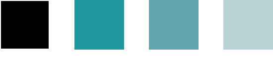

ATOIWeb Site (PC)
Web Design & Create
- View Size対応サイズ
- PC(1920×1080)
- Create Days実装期間
- 5日間
- Used Technology使用技術
- JavaScript・Swiper.js
Conceptコンセプト
「日常と自然が一番近いところ」をコンセプトに、最近札幌駅の近くにオープンした商業ビル内にある都会型水族館のwebサイトという設定で制作しました。
前職の経験も活かし、お客様によく聞かれる内容である「イベント情報、営業情報（混雑情報）、アクセス、チケットの情報」をトップ画面からすぐ見られるように配置しました。チケット購入の追従ボタンでいつでもチケットを購入できるようにし、イベント情報はモーダルを使用して見られるようにしています。
Impression制作を通して感じたこと
コーディングでは、ここまで勉強していたVanillaJSを初めて使用して制作を行いました。jQueryと違う点をに悩みつつ、JavaScriptならではの書き方を勉強できたと感じています。わかりやすさとメンテナンス性を意識して使用用途ごとに記述とファイルを分け、適宜コメントを入れるよう意識しています。
また「PICK UP」部分でSwiper.jsのプラグインを使用し、ページネーションボタンの配置等を工夫したことで、プラグインをカスタマイズする練習になりました。
Fonts & Colors

コンセプトに合わせて見出しは現代的な印象のフォント、本文は情報が伝わりやすいように可読性の高いフォントを使用しました。高級感と落ち着いた雰囲気の黒、透き通った海の色である青緑色（ターコイズ）を使用し、都会の中の自然を連想させるように意識しています。